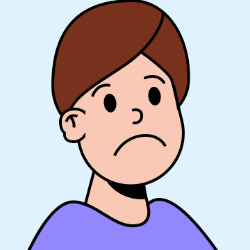
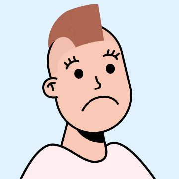
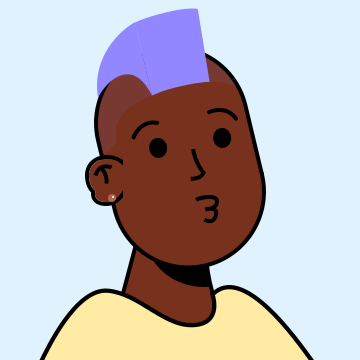

Profissionais
Encontre o psicólogo ideal para você
Encontre o psicólogo ideal para você

Terapia infantil e adolescente
⭐ 4.9

Terapia de casal
⭐ 4.8

Depressão e ansiedade
⭐ 5.0

Terapia cognitivo...
⭐ 4.9
Psicanálise
⭐ 4.7
Terapia Familiar
⭐ 4.8
Transtornos Alimentares
⭐ 4.9

Orientação profissional
⭐ 4.6
Burnout
⭐ 5.0

Terapia de casal
⭐ 4.7

Transtornos mentais
⭐ 4.8
Depressão e ansiedade
⭐ 4.9